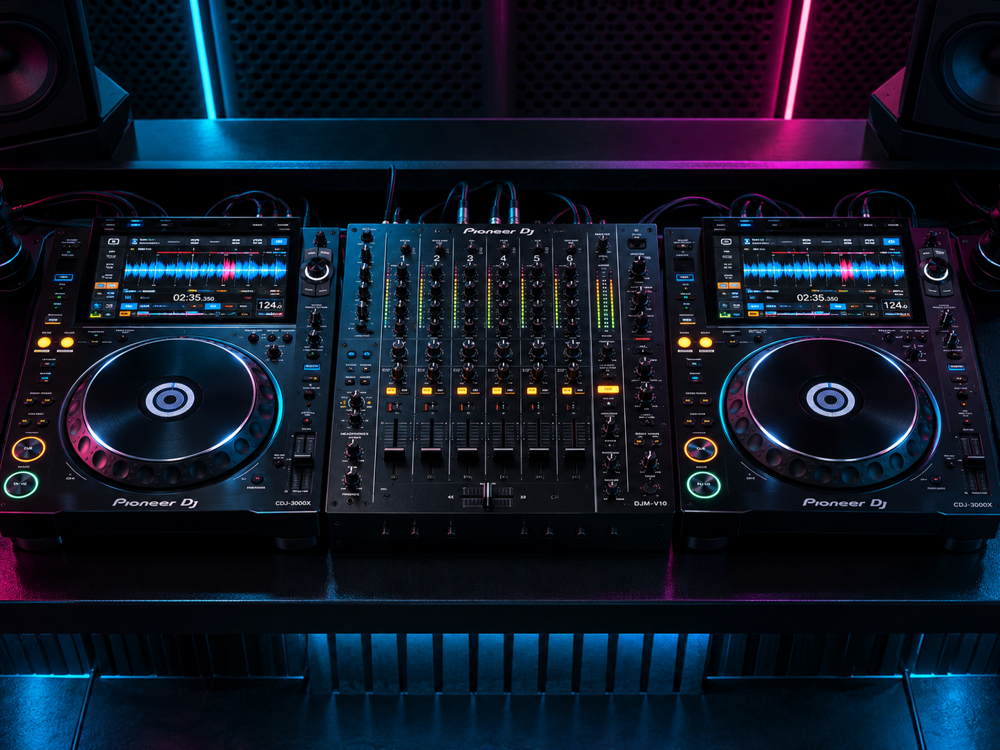

ACADEMIA DE
MÚSICA
Todos los programas
Academia
LOAD · Club
Consultar inscripción →
Ver contenido ↓

FORMACIÓN PROFESIONAL
MUSIK
ACADEMY
DURACIÓN
CARGA / ETAPAS
MODALIDAD
CERTIFICACIÓN
CONTENIDO DEL PROGRAMA
Aprendé haciendo.
SEGUÍ TU RECORRIDO
Programas relacionados.
Ver toda la oferta →